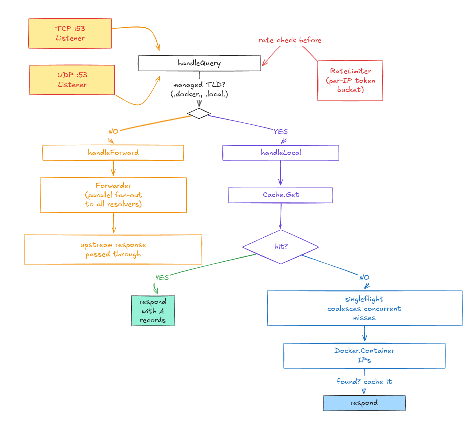

Features
- Automatic DNS Resolution: resolve Docker container names with a custom TLD (default
.docker) to their IP addresses. Supports multiple TLDs and containers on any Docker network. - Fallback DNS: forwards non-Docker queries in parallel to configurable upstream resolvers (default:
8.8.8.8,1.1.1.1,8.8.4.4), returning the first successful response. - Caching: TTL-based DNS cache with background eviction, size limits, and hit/miss telemetry.
- Singleflight: concurrent cache misses for the same name are collapsed into a single Docker API call (thundering-herd protection).
- Rate Limiting: per-IP token-bucket rate limiter with automatic idle cleanup.
- Health & Metrics: HTTP server on
:8080exposes/healthand/metrics(cache stats, query counts, error rates). - UDP + TCP: full DNS protocol support with EDNS0 handling and proper truncation.
- Debian Package:
.debpackage with automatic systemd integration and clean uninstall. - Tested on 12 Configurations: full install -> resolve -> uninstall lifecycle CI on Ubuntu 20.04/22.04/24.04 and Debian 11/12/13, both server and desktop variants.
- Lightweight: single Go binary, minimal resource footprint.
Architecture
The diagram below shows how a DNS query flows through the system, from the network listeners down to Docker or upstream resolvers.

Queries for managed TLDs (like .docker or .local) are resolved by inspecting the matching Docker container. A singleflight gate prevents concurrent cache misses from hammering the Docker API. All other queries are forwarded in parallel to the configured upstream resolvers, returning the first successful response.
Installation (Linux/Debian)
Important: Read the Systemd & DNS documentation for a deep overview on how systemd integrates with DNS resolution across distros.
Download and Install
Go to the Releases page, download the .deb for your version, and install:
wget https://github.com/MedUnes/docker-dns/releases/download/v1.0.4/docker-dns-1.0.4_amd64.deb
sudo dpkg -i docker-dns-1.0.4_amd64.debThe installer automatically detects your DNS resolver and integrates accordingly:
| System | Integration |
|---|---|
| Ubuntu (systemd-resolved) | Drop-in config at /etc/systemd/resolved.conf.d/docker-dns.conf with routing domains (~docker) |
| Debian Desktop (NetworkManager) | Dispatcher script at /etc/NetworkManager/dispatcher.d/docker-dns re-prepends nameserver after every NM event |
| Debian Server (plain resolv.conf) | Prepends nameserver 127.0.0.153 to /etc/resolv.conf |
If you use a custom resolver (dnsmasq, unbound, Pi-hole), see the Systemd & DNS documentation for manual integration examples.
Verify
systemctl status docker-dnsUninstall
All integration changes are reversed automatically on removal:
sudo dpkg -r docker-dnsConfiguration
The systemd service reads from /etc/docker-dns/docker-dns.conf (INI format). All settings are also available as CLI flags.
# /etc/docker-dns/docker-dns.conf
IP=127.0.0.153
TTL=300
TLD=docker,local
DEFAULT_RESOLVER=8.8.8.8,1.1.1.1,8.8.4.4Full Reference
| CLI Flag | INI Variable | Default | Description |
|---|---|---|---|
--ip | IP | 127.0.0.153 | IP address the DNS server listens on |
--tld | TLD | docker | Comma-separated managed TLDs for container resolution |
--ttl | TTL | 300 | TTL in seconds for cache entries and DNS responses |
--resolvers | DEFAULT_RESOLVER | 8.8.8.8,1.1.1.1,8.8.4.4 | Comma-separated fallback DNS resolver IPs |
--forward-timeout | X | 2s | Per-resolver timeout for forwarded DNS queries |
--rate-limit | X | 100 | Max queries/sec per client IP (0 disables) |
--rate-burst | X | 50 | Burst allowance for rate limiting |
--max-cache-size | X | 10000 | Max DNS cache entries (0 = unlimited) |
--http-addr | X | :8080 | Health/metrics HTTP server address (empty to disable) |
--docker-timeout | X | 5s | Timeout for Docker API calls |
--docker-host | X | auto | Docker host override (defaults to DOCKER_HOST env / socket) |
--log-level | X | info | Log level: debug, info, warn, error |
After editing, restart the service:
sudo systemctl restart docker-dnsConfiguration Notes
- IP: typically in the loopback range (
127.0.0.0/8), but can be any interface. Change if another service uses the default. - TTL: higher values improve performance for stable stacks; lower values give more real-time accuracy for dynamic containers.
- TLD: supports multiple TLDs. With
TLD=docker,local, bothmyapp.dockerandmyapp.localresolve to the container's IP. - Resolvers: specify multiple for redundancy. Can include your local DNS (Pi-hole, corporate resolver, etc.).
Usage
Resolve Containers by Name
dig mycontainer.docker @127.0.0.153 +shortResolve External Domains
Non-Docker queries are forwarded to your fallback resolvers:
dig google.com @127.0.0.153 +shortHealth Check
curl http://localhost:8080/health
# {"status":"ok"}Metrics
curl http://localhost:8080/metrics
# {"queries_total":142,"cache_hits":98,"cache_misses":44,...}CLI Help
sudo ./docker-dns -h
Usage of docker-dns:
-ip string
IP address the DNS server listens on (default "127.0.0.153")
-tld string
Comma-separated managed top-level domains for container resolution (default "docker")
-ttl int
TTL in seconds for cache entries and DNS responses (default 300)
-resolvers string
Comma-separated fallback DNS resolver IPs (default "8.8.8.8,1.1.1.1,8.8.4.4")
-forward-timeout duration
Per-resolver timeout for forwarded DNS queries (default 2s)
-rate-limit float
Max queries/sec per client IP; 0 disables rate limiting (default 100)
-rate-burst int
Burst allowance for per-IP rate limiting (default 50)
-max-cache-size int
Max DNS cache entries; 0 = unlimited (default 10000)
-http-addr string
Address for the health/metrics HTTP server; empty to disable (default ":8080")
-docker-timeout duration
Timeout for Docker API calls (default 5s)
-docker-host string
Docker host override (empty = use DOCKER_HOST env / socket default)
-log-level string
Log level: debug | info | warn | error (default "info")Note: sudo (or root) is required because port 53 is a privileged port. The .deb package uses CAP_NET_BIND_SERVICE instead.
Systemd & DNS Integration
Docker's built-in DNS (127.0.0.11) only works container-to-container on user-defined networks. From the host, there's no way to resolve a container by name without manual intervention.
docker-dns solves this by running on the host and integrating with the system's DNS stack. Ubuntu and Debian handle DNS in fundamentally different ways, and the installer handles both automatically.
Full documentation covering systemd-resolved routing domains, plain resolv.conf, browser DNS-over-HTTPS caveats, and the tested configuration matrix is available in docs/Systemd.md.
Tested Configurations
| OS | Version | Variant | DNS Method |
|---|---|---|---|
| Noble | Ubuntu 24.04 | Server | systemd-resolved + routing domain |
| Noble | Ubuntu 24.04 | Desktop | systemd-resolved + NM (dns=systemd-resolved) |
| Jammy | Ubuntu 22.04 | Server | systemd-resolved + routing domain |
| Jammy | Ubuntu 22.04 | Desktop | systemd-resolved + NM (dns=systemd-resolved) |
| Focal | Ubuntu 20.04 | Server | systemd-resolved + routing domain |
| Focal | Ubuntu 20.04 | Desktop | systemd-resolved + NM (dns=systemd-resolved) |
| Trixie | Debian 13 | Server | plain resolv.conf |
| Trixie | Debian 13 | Desktop | NM dispatcher + resolv.conf |
| Bookworm | Debian 12 | Server | plain resolv.conf |
| Bookworm | Debian 12 | Desktop | NM dispatcher + resolv.conf |
| Bullseye | Debian 11 | Server | plain resolv.conf |
| Bullseye | Debian 11 | Desktop | NM dispatcher + resolv.conf |
Build from Source
git clone https://github.com/medunes/docker-dns.git
cd docker-dns
make buildRun the binary:
sudo ./bin/docker-dns --ip=127.0.0.153 --tld=dockerOr download pre-built binaries from the Releases page.
Contributing
Contributions are welcome.
git checkout -b feature/YourFeature
git commit -am 'Add YourFeature'
git push origin feature/YourFeatureThen open a Pull Request on GitHub.
License
This project is licensed under the AGPL License: see the LICENSE file for details.